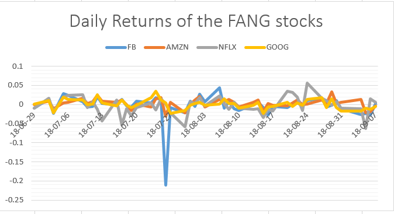
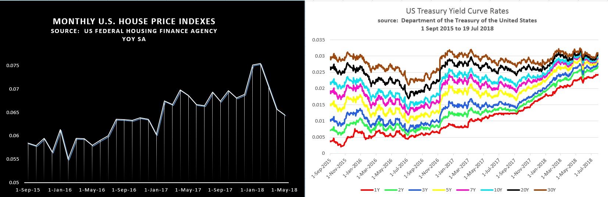

The Auto-Callable Contingent Coupon Barrier Notes Linked to the Lesser Performing of Four Equity Securities (a.k.a. "FANG barrier") was cited in FT Alphaville, July 20 by Dan McCrum with the challenge “Readers better able to price option values might chime in”. As we are interested in risk, we chime in on this interesting product.
The FANG barrier is a July 1, 2021 note, whose superior coupon payments of 10.2% per annum and principal return are impacted by barriers. If any of the four stocks (Facebook, Amazon, Netflicks, Google) at any of the 12 quarterly coupon payment dates is 50% below their initial price then the coupon for that payment date is forfeited, and additionally, on the maturity date, the return of principal is based on the lowest returning stock. The maximum possible return is the principal plus 12 coupon payments of 2.55% each. The minimum return is zero. An automatic call occurs if on any payment date from Dec 27, 2018, each of the stocks are greater than the initial price.
RBC issued $1,424,000 of this note June 29, 2019, with net proceeds of $1,391,960. RiskSnap priced the product as worth $1,359,000 June 20th using Monte Carlo. On Sep 7th the value increased to 1,386,000. In the case of barrier options, volatility is a negative factor since there is more likelihood of getting “knocked out”. On the other hand time decay is positive since as maturity approaches, the risk of getting “knocked out” diminishes, which may have contributed to the increase in price. Other risk factors include correlation. As correlation diminishes there is more likelihood that one of the stocks will hit a barrier as they begin to behave independently of each other.
Stay tuned for more pricing updates on this note.

At a 2007 hedge fund conference in Nassau, a Paulson & Co presenter showed an interesting housing chart which has since stuck with me. Also in 2007, John Paulson became world-famous by shorting the US housing market by betting against mortgage backed securities through credit default swaps. His firm made $14Billion and Mr. Paulson himself made $4Billion on this one trade alone.
Currently, although housing prices are still increasing, the rate of change in housing prices is falling and is mirrored in the share price change this year to Jul 27 of the three S&P500 homebuilding companies: Lennar Corporation (LEN) -13.5%, D.R Horton (DHI) -19.5% and NVR Inc (NVR) -20.5%.
Mr. Paulson believed that housing prices were decelerating and Paolo Pellegrini, the analyst who worked with Mr. Paulson, developed a housing price vs wage chart. The chart below is similar and shows the year over year change in the seasonally adjusted housing price index divided by the inflation-adjusted hourly wage growth. The impact of yields on housing costs is well known but is complex. The chart below relates to wages, a more direct approach which illustrates that regardless of cause, housing is becoming less attractive/affordable relative to wage. (T. Murk)
Var results for LEN and DHI covering 10 years are shown below. Yield curves for other currencies can be found under market risk factors.

Value at Risk (VaR) is one of the most popular tools used in risk management and is incorporated within the Basel Accord for banking supervision. VaR is used by central counterparties (CCPs) for purposes of determining initial margin. VaR and Expected Shortfall (ES) are standard measures used by traders for setting risk limits and can be used by investors, traders and risk managers both for preventing panic selling (or buying) in periods of high volatility, and also preventing overreaching in periods of low volatility.
Our core solution is VaR.
A click on the chart icons below for various assets and sectors, will provide a graph where the one in one hundred chance (99th percentile) breach is visible below the Current VaR red line .